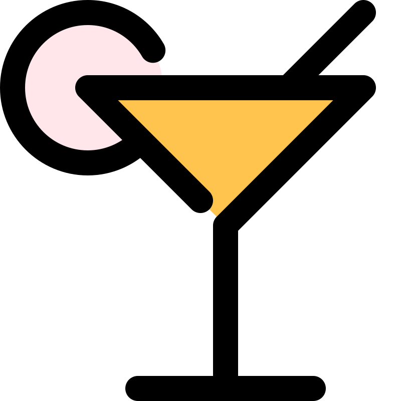

<mat-toolbar class="toolbar">
  <div class="toolbar__first-container">
    <button mat-icon-button [matMenuTriggerFor]="menu"><mat-icon>menu</mat-icon></button>
    <mat-menu #menu="matMenu">
      <button mat-menu-item routerLink="/drinks">Drinks</button>
      <button mat-menu-item routerLink="/register">Register</button>
      <button mat-menu-item routerLink="/about">About</button>
    </mat-menu>
  <div class="toolbar__first-container__text">
    <span class="toolbar__first-container__text-font">Drinkify</span>
  </div>
    <button
    mat-icon-button class="example-icon favorite-icon"
    aria-label="Example icon-button with heart icon"
    routerLink="/home">
      <mat-icon></mat-icon>
    </button>
  </div>
  <div class="toolbar__second-container">
    <button
    mat-icon-button class="example-icon"
    aria-label="Example icon-button with share icon"
    href="https://material.angular.io/components/button/api"
    >
      
    </button>
  </div>
</mat-toolbar>


  <div class="main-header">
    <button mat-raised-button routerLink="/home">Home</button>
    <button mat-raised-button routerLink="/drinks">Drinks</button>
    <button mat-raised-button routerLink="/register">Register</button>
    <button mat-raised-button	routerLink="/about">About</button>
  </div>

<router-outlet></router-outlet>
